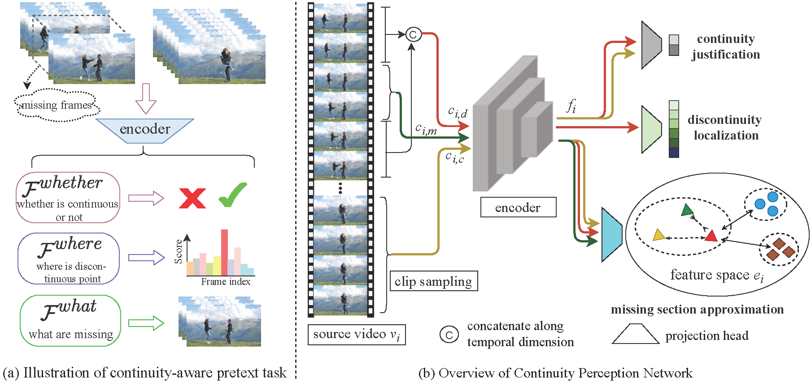
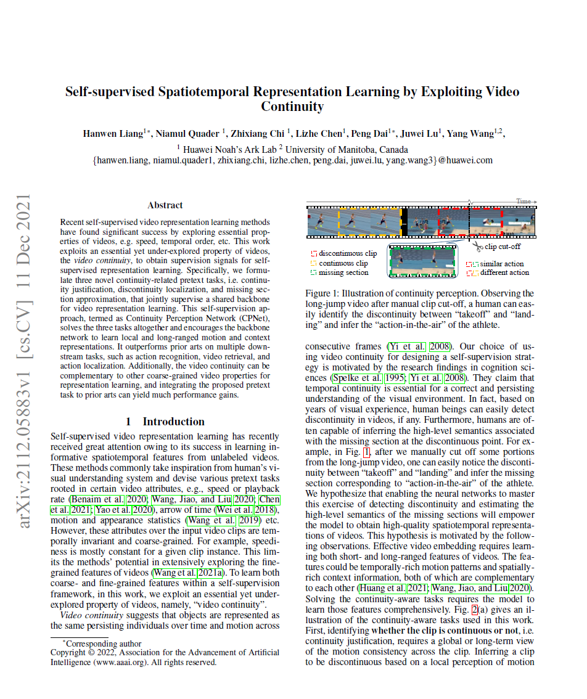

Awesome 3D Gaussians
| A summary of 3D Gaussian Splatting Resources |
|  |
Illustration of the continuity-aware pretext task (a) and the Continuity Perception Network (b). CPNet is composed of a three-branch architecture solving continuity justification, discontinuity localization, and missing section approximation tasks. |
Abstract
Recent self-supervised video representation learning methods have found significant success by exploring essential properties of videos, e.g. speed, temporal order, etc. This work exploits an essential yet under-explored property of videos, the video continuity,
to obtain supervision signals for self-supervised representation learning. Specifically, we formulate three novel continuity-related pretext tasks, i.e. continuity justification, discontinuity localization, and missing section approximation,
that jointly supervise a shared backbone for video representation learning. This self-supervision approach, termed as Continuity Perception Network (CPNet), solves the three tasks altogether and encourages the backbone network to learn local and long-ranged motion and context representations.
It outperforms prior arts on multiple downstream tasks, such as action recognition, video retrieval, and action localization. Additionally, the video continuity can be complementary to other coarse-grained video properties for representation learning,
and integrating the proposed pretext task to prior arts can yield much performance gains.
Paper
|  | "Self-supervised Spatiotemporal Representation Learning by Exploiting Video Continuity",
AAAI 2022 |
Last updated: April 2022